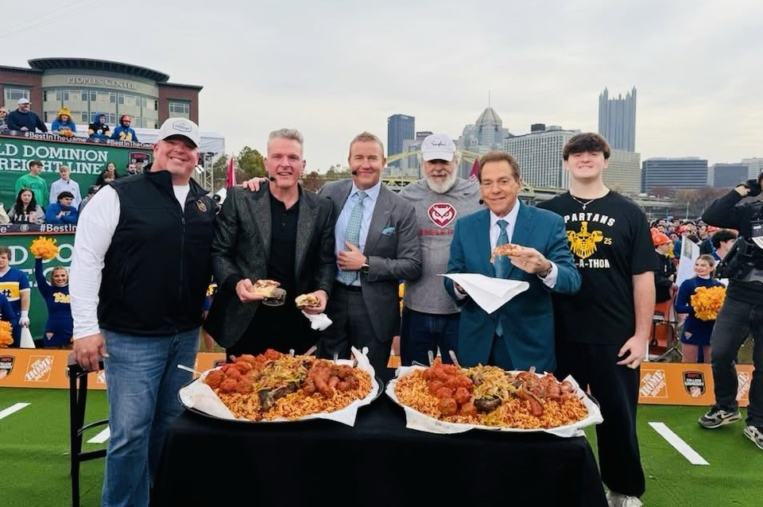

ESPN College GameDay · Pittsburgh
Pat McAfee & the ESPN GameDay Crew Ate Our Sausage.
A special thank you to Joe Caliguire for serving Ricci's Italian Sausage to Pat McAfee and the ESPN GameDay crew when they came to Pittsburgh.
Who are those guys eating pasta, meatballs, and sausage with Joe and Dean Caliguire? Just the biggest show in college football. No big deal.